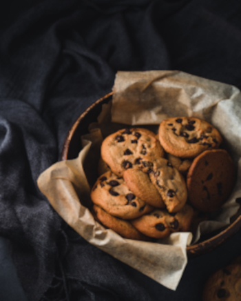

Chocolate Chip Cookies

Image by picoftasty on Freepik
Description
This is my homemade chocolate chip cookie receipe.
Ingredients
- 1 cup cold salted butter, cubed
- 1/2 cup dark brown sugar
- 1/2 cup light brown sugar
- 1/2 cup granulated sugar
- 2 eggs
- 2 tsp vanilla extract
- 1 tsp kosher salt
- 1 tsp baking soda
- 2 tsp cornstarch
- 3 cups all purpose flour
- 2 1/2 cups semi-sweet chocolate chips
Steps
- Preheat oven to 400F/205C. Line a baking sheet with parchment paper and set aside.
- In a bowl add the butter and the sugar. With a mixer (stand preferred but a hand mixer will work too) on low begin mixing the butter and sugar for about 30 seconds. The mixture will look crumbly. Then mix on medium speed until the mixture becomes a creamy, fluffy texture
- Add egg, vanilla, salt, baking soda, and cornstarch. Mix for 1 minute until smooth, scraping the sides of the bowl.
- On low speed begin adding the flour slowly. Mix continuously until all the flour has been added and well combined.
- While keeping the mixer on low add the chocolate chips. If you were using a hand mixer you may need to do this part by hand as the dough will become too stiff for the beaters to work properly.
- Using a large (3 Tbsp) cookie scoop, portion the dough onto the baking sheet roughly 2 inches apart.
- Bake for 8-9 minutes until the edges and tops are lightly golden.
- Allow the cookies to cool for 2-3 minutes on the baking sheet before transferring to a wire rack to finish cooling completely.
Home